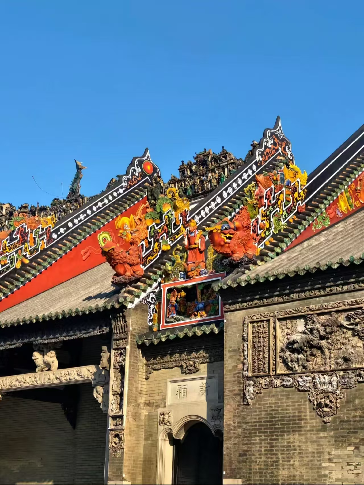
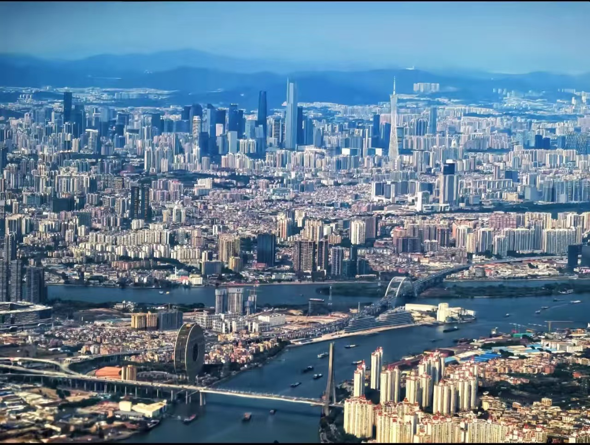
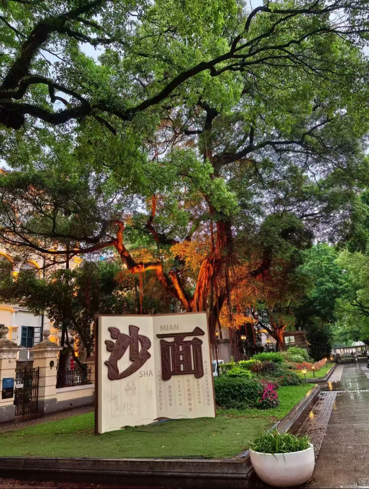
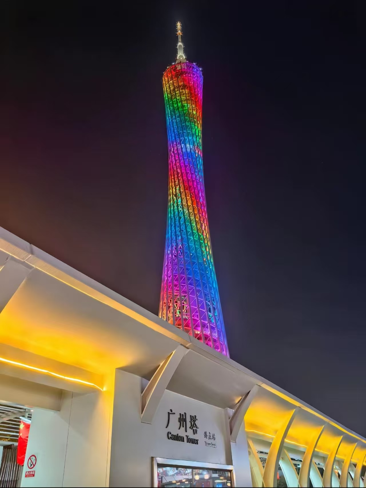
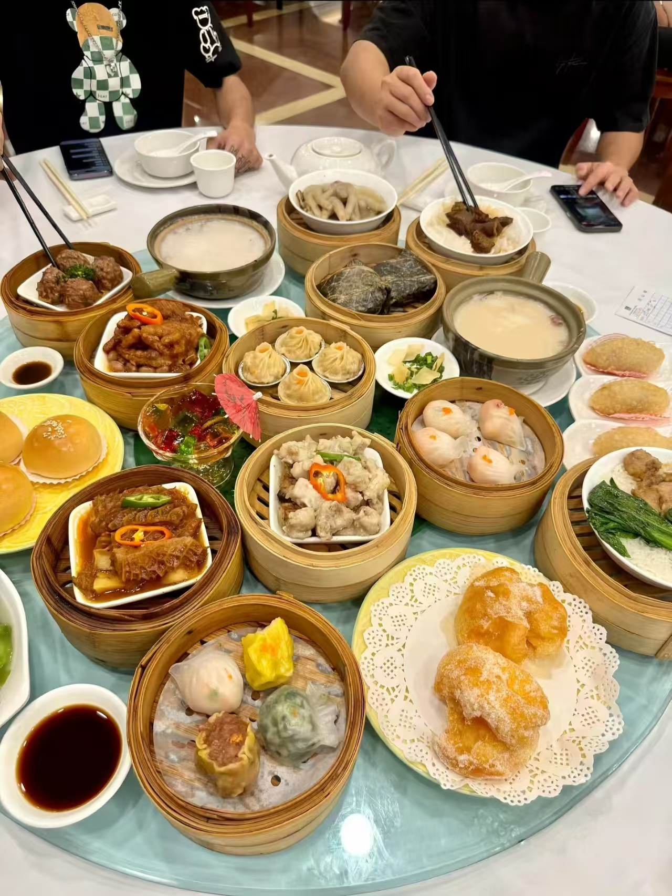

Chen Clan Ancestral Hall
One of the most iconic cultural landmarks in Guangzhou, the Chen Clan Ancestral Hall showcases the beauty of Lingnan craftsmanship through intricate wood carving, stone carving, and decorative roof art.
From historic streets and riverside lights to timeless Cantonese cuisine, Guangzhou is a city where tradition and modern life move side by side.
Guangzhou is a city of contrast. Arcaded streets, glowing riverside views, and fast-moving urban life come together in a place that feels both deeply rooted and constantly evolving.

Guangzhou welcomes visitors with a rare balance of energy and atmosphere. During the day, the city feels layered with daily life, commerce, and long-standing local traditions. By night, it becomes brighter and more cinematic, with reflections stretching across the Pearl River.
What makes Guangzhou memorable is not only its landmarks, but also the way its streets feel alive. Traditional architecture, local flavors, and a strong modern skyline all exist within the same urban rhythm.
Pearl River • Lingnan Culture • Contemporary City LifeGuangzhou’s cultural character lives through its architecture, decorative arts, and historic districts. The city preserves a strong sense of place while remaining open, layered, and walkable for visitors.

One of the most iconic cultural landmarks in Guangzhou, the Chen Clan Ancestral Hall showcases the beauty of Lingnan craftsmanship through intricate wood carving, stone carving, and decorative roof art.

With quiet boulevards, colonial-era buildings, and a slower atmosphere, Shamian Island offers a different side of Guangzhou. It feels peaceful, elegant, and especially appealing for walking and photography.
Modern Guangzhou is best experienced after dark. Across the river, towers glow with color, bridges shimmer with reflections, and the skyline takes on a distinctly futuristic energy.
At the heart of the skyline stands Canton Tower, one of Guangzhou’s most recognizable landmarks. Its elegant form and illuminated structure turn it into a symbol of the city’s contemporary identity.
Nearby riverside spaces and cruise routes offer some of the best night views in the city. Together, they create an atmosphere that feels vibrant, polished, and unmistakably urban.
Canton Tower • Pearl River Night View • Urban Glow
In Guangzhou, food is not just part of travel — it is part of the city’s identity. Local dining culture is built on freshness, balance, and the shared pleasure of gathering around traditional dishes.

Cantonese cuisine is famous for its refinement, and Guangzhou remains one of the best places to experience it. Morning tea culture, carefully prepared roast meats, and classic desserts all reflect the city’s culinary heritage.